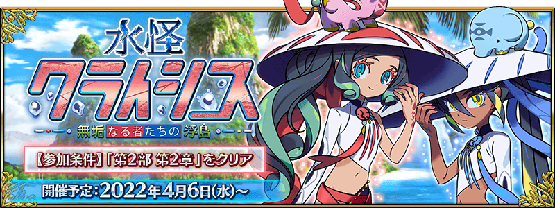
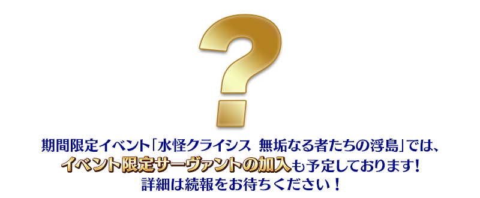
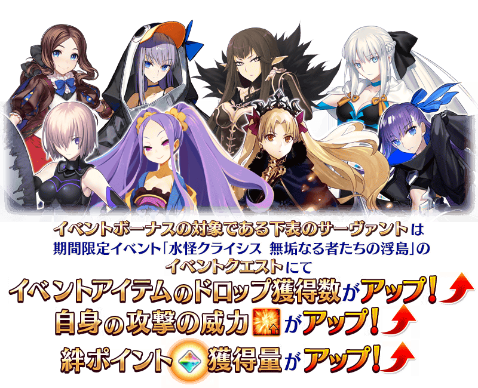

【3月30日(三) 17:00圖片更新】
決定自2022年4月6日(三) 17:00舉辦期間限定活動「水怪危機 純潔者們的浮島」！
詳情請期待續報。
※本頁面皆為開發中圖片。會有與實際圖片相異的情況。
◆活動舉辦預定◆
2022年4月6日(三) 17:00～(預定)
◆活動參加條件◆
滿足以下條件的御主才能參加
・通過第2部 第2章「Lostbelt No.2 無間冰焰世紀 諸神黃昏 不滅之火的好漢」
※不需要通過亞種特異點(從Ⅰ到Ⅳ)。
注意
本活動包含有關第2部 第6章 阿瓦隆・勒菲的一部份劇透內容。
關於未通過到第2部 第6章 阿瓦隆・勒菲而參加本活動的玩家，請理解包含一部份劇透來參加。
※在2018年12月31日(二) 23:00以後新配信的主線故事及期間限定活動、一部份關卡、宣傳活動及召喚中，會顯示隱藏真名的對象從者真名。 ※3月30日(三) 17:00追記
期間限定活動「水怪危機 純潔者們的浮島」中，進行活動的話可讓活動限定從者加入。
關於活動限定從者的詳情，敬請期待續報。

在與本活動開始的同時，新的從者會在期間限定的聖晶石召喚登場！
關於從者的詳情，敬請期待續報。

【3月30日(三) 17:00追記】
期間限定活動「水怪危機 純潔者們的浮島」的期間中，一部份的從者在活動關卡中會得到「活動道具的掉落獲得數提升」與「自身的攻擊威力提升」與「絆點數獲得量提升」的加成！
※活動加成的效果量因從者而異。 ※瑪琇・基利艾拉特的「絆點數獲得量提升」效果，是所謂「我方全體含候補的絆點數獲得量提升」的效果。支援時此效果無效。

【活動加成的對象從者】
| 職階 | 稀有度 | 從者名 |
|---|---|---|
| Lancer | ★★★★★ | 艾蕾修卡 |
| ★★★★ | 謎之Alterego・Λ | |
| Rider | ★★★★★ | 李奧納多・達文西 |
| Assassin | ★★★★★ | 賽米拉米斯 |
| ★★★★ | 武則天(不夜城的Assassin) | |
| Berserker | ★★★★★ | 摩根 |
| Alterego | ★★★★★ | Meltryllis |
| Shielder | ★★★ | 瑪琇・基利艾拉特 |
※就算成為對象從者也會有未在本活動的主線劇本登場的情況。 ※自3月30日(三) 17:00，在從者選擇畫面和從者強化畫面等，追加活動加成篩選器。由於是只顯示於活動活躍從者的便利功能，敬請活用。